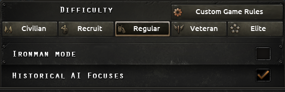

自定义难度
原页面：Custom difficulty
在设置 HOIIV 游戏时，玩家可以通过点击自定义游戏规则按钮来修改游戏难度设置中的特定内容。

注意：对这些游戏规则的大部分修改都会导致成就被禁用。
主要国家增强
「主要国家增强」允许玩家提升 HOIV 主要国家的实力，这些国家包括：德国、意大利、苏联、法国、英国、美国、日本（以及蒙疆联合自治政府和满洲国），还有中国（中华民国和中国共产党）。这些增强通过滑块实现，滑块拉满时会为所选国家赋予强大的加成；如果滑块未拉满，加成会更弱（如果滑块处于中间位置，则只应用 50% 的加成）。
完整加成列表可在here查看。
提升上述任何主要国家的实力都会禁用成就。
外交政策
Wargoals
玩家可以决定国家在生成战争目标方面受到多大限制。
| Option | 描述 | 成就已启用？ |
|---|---|---|
| 始终自由 | 在任何世界紧张度下，任何意识形态的战争目标都不受限制。 | |
| Limited | 战争目标生成受意识形态和世界紧张度上限限制。 | |
| 世界紧张度 25% 时自由 | 世界紧张度低于 25% 时禁用战争目标生成，此后对所有国家开放。这会覆盖任何意识形态限制，但仍允许通过国策获得战争目标。 | |
| 世界紧张度 50% 时自由 | 世界紧张度低于 50% 时禁用战争目标生成，此后对所有国家开放。这会覆盖任何意识形态限制，但仍允许通过国策获得战争目标。 | |
| 世界紧张度 75% 时自由 | 世界紧张度低于 75% 时禁用战争目标生成，此后对所有国家开放。这会覆盖任何意识形态限制，但仍允许通过国策获得战争目标。 | |
| 世界紧张度 100% 时自由 | 世界紧张度低于 100% 时禁用战争目标生成，此后对所有国家开放。这会覆盖任何意识形态限制，但仍允许通过国策获得战争目标。 | |
| 仅限国策 | 战争目标只能从国策、事件和决议中获得。 | |
| 仅限国策（至 1938 年） | 在 1938 年之前，战争目标只能从国策、事件和决议中获得。 | |
| 仅限国策（至 1939 年） | 在 1939 年之前，战争目标只能从国策、事件和决议中获得。 | |
| 仅限国策（至 1940 年） | 在 1940 年之前，战争目标只能从国策、事件和决议中获得。 |
军事通行权和停泊权
玩家可以决定国家在授予military and docking rights方面受到多大限制。
| Option | 描述 | 成就已启用？ |
|---|---|---|
| Free | 国家可以从任何其他国家获得军事通行权和停泊权。 | |
| 仅限相同意识形态 | 国家可以从拥有相同执政意识形态的国家获得军事通行权和停泊权。 | |
| Blocked | 国家永远不能从阵营之外的任何其他国家获得军事通行权和停泊权。 |
释放国家
玩家可以决定国家能否释放位于其领土内的国家。
| Option | 描述 | 成就已启用？ |
|---|---|---|
| Free | 除非被特别阻止，国家始终可以释放国家。 | |
| 仅在和平时 | 国家只能在和平时释放国家。 | |
| Blocked | 国家永远不能释放国家。 |
生产许可
玩家可以决定国家在给予/接受生产许可方面受到多大限制。
| Option | 描述 | 成就已启用？ |
|---|---|---|
| Free | 国家可以从任何国家获得生产许可。 | |
| 仅限相同意识形态 | 国家只能从拥有相同执政意识形态的国家获得生产许可。 | |
| 仅限相同阵营 | 国家只能从同一阵营内的国家获得生产许可。 | |
| Blocked | 除特殊决议和事件外，国家永远不能获得生产许可。 |
租借
玩家可以决定国家在派遣租借方面受到多大限制。
| Option | 描述 | 成就已启用？ |
|---|---|---|
| Free | 国家可以在任何世界紧张度水平下向任何人租借装备。 | |
| Limited | 租借受世界紧张度和意识形态规则限制。 | |
| 仅限相同意识形态 | 国家只能向执政意识形态相同的国家租借装备。 | |
| 仅限相同阵营 | 国家只能向同一阵营内的国家租借装备。 | |
| Blocked | 国家永远不能向任何其他国家租借装备。 |
志愿军
玩家可以决定国家在派遣志愿军方面受到多大限制。
| Option | 描述 | 成就已启用？ |
|---|---|---|
| Free | 国家可以向任何国家派遣志愿军，不论世界紧张度如何。 | |
| Limited | 派遣志愿军受世界紧张度和意识形态规则限制。 | |
| 仅限相同意识形态 | 国家只能向拥有相同执政意识形态的国家派遣志愿军。 | |
| Blocked | 国家永远不能向任何国家派遣志愿军。 |
保障独立
玩家可以决定国家能否guarantee the independence其他国家。
| Option | 描述 | 成就已启用？ |
|---|---|---|
| Free | 可以在任何时候保障任何国家的独立，不论世界紧张度如何。 | |
| Limited | 发出保障独立受世界紧张度和意识形态的限制。 | |
| 仅限相同意识形态 | 国家只能保障与其执政意识形态相同的国家。 | |
| Blocked | 国家永远不能保障其他国家。这不影响游戏开始时就存在的保障或通过国策发出的保障。 |
撤销保障独立
玩家可以决定国家能否撤销保障独立。
| Option | 描述 | 成就已启用？ |
|---|---|---|
| Allowed | 保障独立可以被撤销。 | |
| Blocked | 除国策外，保障独立永远不能被撤销。 |
退出阵营
玩家可以决定阵营成员能否退出其阵营。
| Option | 描述 | 成就已启用？ |
|---|---|---|
| Allowed | 完全主权的国家可以在和平时退出阵营。 | |
| Blocked | 除通过国策和事件外，国家不得退出阵营。 |
踢出阵营
玩家可以决定阵营领袖能否将成员踢出其阵营。
| Option | 描述 | 成就已启用？ |
|---|---|---|
| Allowed | 阵营领袖可以将任何国家踢出阵营。 | |
| Blocked | 阵营领袖不得将任何阵营成员踢出。 |
接管阵营领导权
玩家可以决定在满足特定条件时国家能否取得阵营的控制权。
| Option | 描述 | 成就已启用？ |
|---|---|---|
| Allowed | 如果满足条件，国家可以接管阵营领导权。 | |
| Blocked | 国家不能接管阵营领导权。 |
秘密行动
Coups
玩家可以修改允许coups的情形。
| Option | 描述 | 成就已启用？ |
|---|---|---|
| Free | 国家可以自由策划和执行政变。 | |
| 仅针对 AI | 国家只能对非人类玩家操控的国家策划和执行政变。 | |
| Blocked | 国家不得在任何国家策划或执行政变。 |
提升党派支持度
玩家可以修改允许提升party popularity的情形。
| Option | 描述 | 成就已启用？ |
|---|---|---|
| Free | 国家可以在任何其他国家提升党派支持度。 | |
| 仅针对 AI | 国家只能对非人类玩家操控的国家提升党派支持度。 | |
| 仅针对玩家 | 国家只能对由人类玩家操控的国家提升党派支持度。 | |
| Blocked | 国家不得在任何国家提升党派支持度。 |
游戏玩法规则
Paradrops
玩家可以允许或阻止伞兵师使用其通过飞机空降到省份的能力。不过，这不会禁用招募和部署伞兵师的能力。
| Option | 描述 | 成就已启用？ |
|---|---|---|
| Allowed | 国家可以自由执行伞降。 | |
| Blocked | 国家在任何情况下都不能执行伞降。伞兵师仍可被招募，但无法执行空降攻击。 |
最高要塞等级
玩家可以设置可手动建造的forts（陆地和海岸）的最高等级。该设置可以保持不变（允许建造最高 10 级的要塞），也可以设为 1 级到 9 级之间的任意值。不过，已有的要塞以及相关的国策、决议和事件不受此设置限制。
| Option | 描述 | 成就已启用？ |
|---|---|---|
| Normal | 国家可以按正常限制建造陆地和海岸要塞。 | |
| 等级1 | 国家只能把陆地和海岸要塞建造到所选等级。游戏开始时已存在的工事不受此影响。由国策、决议和事件提供的建筑可以超过所选等级。 | |
| ... | ||
| 等级9 | 国家只能把陆地和海岸要塞建造到所选等级。游戏开始时已存在的工事不受此影响。由国策、决议和事件提供的建筑可以超过所选等级。 | |
焦土战术
禁止在州菜单中使用焦土。
| Option | 描述 | 成就已启用？ |
|---|---|---|
| Allowed | 国家可以自由使用焦土。 | |
| Blocked | 国家在任何情况下都不能使用焦土。 |
AI 行为
希望获得不同 HOIV 体验的玩家可以修改若干 AI 国家的行为。这些选项包括确保历史准确性，或促使各国走上替代路径。
某些国家只有在购买特定 DLC 后才可修改。这些要求在国家名称旁以图标标出。
德国
| Option | 描述 | 成就已启用？ |
|---|---|---|
| 默认值 | AI 将根据其他游戏设置做出决策，例如强制历史国策选项和其他游戏情景。这与 1.5 及更早版本的行为相同。 | |
| 法西斯主义 | 德国 AI 将保持法西斯主义，并试图通过沿国策树中的相关路径推进来接管欧洲。 | |
| 民主主义 | 德国 AI 将试图通过沿国策树中的相关路径推进来建立君主立宪制。 | |
| 恢复德皇 | 德国 AI 将试图通过沿国策树中的相关路径推进，让德皇重登王位。 | |
| 替代法西斯主义 | 德国 AI 将试图用「核心圈」成员之一取代希特勒，听取冯·牛赖特的担忧，并试图推行其「新世界秩序」。 | |
| 无产阶级专政 |
德国 AI 将试图推翻纳粹，把共产主义革命带到德国。随后它会试图建立无产阶级专政。 | |
| 复兴斯巴达克同盟 |
德国 AI 将试图推翻纳粹，把共产主义革命带到德国。随后它会试图在新的斯巴达克同盟领导下建立一个更民主的社会主义政权，并把共产主义革命的野火传遍欧洲。 | |
| 随机 | AI 将在游戏开始时随机决定一套行动方案并试图执行它。 |
苏联
| Option | 描述 | 成就已启用？ |
|---|---|---|
| 默认值 | AI 将根据其他游戏设置做出决策，例如强制历史国策选项和其他游戏情景。这与 1.5 及更早版本的行为相同。 | |
| Historical | 苏联 AI 将试图尽可能遵循历史事件链条。 | |
| 左翼反对派 | 苏联 AI 将试图让左翼反对派重新掌权并重启不断革命，其方式是沿国策树中的相关分支推进。 | |
| 左翼反对派合作 | 苏联 AI 将试图让左翼反对派重新掌权，并把其他反对派团体也纳入党内，同时通过国策树中的相关分支重启不断革命。AI 的目标是组建最高苏维埃。 | |
| 右翼反对派 |
苏联 AI 将试图让右翼反对派掌权，其方式是沿国策树中的相关分支推进。 | |
| 右翼反对派合作 |
苏联 AI 将试图让右翼反对派掌权，并把其他反对派团体纳入党内，其方式是沿国策树中的相关分支推进。AI 的目标是组建最高苏维埃。 | |
| 沙皇流亡者 |
苏联 AI 将通过内战驱逐共产党人，并恢复沙皇俄国，其方式是沿国策树中的相关分支推进。 | |
| 法西斯流亡者 |
苏联 AI 将通过内战驱逐共产党人，并建立法西斯政府，其方式是沿国策树中的相关分支推进。 | |
| 随机 | AI 将在游戏开始时随机决定一套行动方案并试图执行它。 |
日本
| Option | 描述 | 成就已启用？ |
|---|---|---|
| 默认值 | AI 将根据其他游戏设置做出决策，例如强制历史国策选项和其他游戏情景。这与 1.5 及更早版本的行为相同。 | |
| 红日升起 | 日本 AI 将试图转向共产主义，并支持亚洲其他共产主义政权，其方式是沿国策树中的相关路径推进。 | |
| 劳农派得势 | 日本 AI 将试图转向共产主义，建立由劳农派领导的政府，并沿国策树中的相关路径在亚洲发起一场反帝国主义的征讨。 | |
| 皇道派获胜 | 日本 AI 将试图向北进攻苏联，并与轴心国携手，其方式是沿国策树中的相关路径推进。 | |
| 清廉的民主 | 日本 AI 将试图通过沿国策树中的相关路径推进，改革为民主国家。 | |
| 大政翼赞会 | 日本 AI 将遵循其历史路线，并试图向南进攻西方盟国，其方式是沿国策树中的相关路径推进。 | |
| 随机 | AI 将在游戏开始时随机决定一套行动方案并试图执行它。 |
意大利
| Option | 描述 | 成就已启用？ |
|---|---|---|
| 默认值 | AI 将根据其他游戏设置做出决策，例如强制历史国策选项和其他游戏情景。这与 1.5 及更早版本的行为相同。 | |
| 法西斯主义 - 历史 | 意大利 AI 将试图尽可能遵循历史事件链条。 | |
| 替代法西斯 - 伊塔洛·巴尔博 |
意大利 AI 将试图把墨索里尼赶下台，代之以伊塔洛·巴尔博，以寻求一条独立的前进道路。 | |
| 替代法西斯 - 迪诺·格兰迪 |
意大利 AI 将试图把墨索里尼赶下台，代之以迪诺·格兰迪，以寻求加强与同盟国的关系。 | |
| 君主制 - 罗马帝国 |
国王维托里奥·埃马努埃莱将带领意大利走向绝对君主制，试图实现「我们的海」并重建罗马帝国。 | |
| 基督教民主 |
国王维托里奥·埃马努埃莱将废黜墨索里尼，试图组建一个独立阵营，并带领意大利走向君主立宪制，偏向由阿尔契德·德·加斯佩里领导的基督教民主党。 | |
| 意大利共产主义 |
意大利反法西斯主义者将联合起来以武力推翻法西斯政权，组建共产主义政府，废除殖民地，并寻求加入共产国际 | |
| 意大利社会主义 |
意大利反法西斯主义者将联合起来以武力推翻法西斯政权，组建社会民主政府，并寻求与前非洲殖民地组建联邦。 | |
| 随机 | AI 将在游戏开始时随机决定一套行动方案并试图执行它。 |
法国
| Option | 描述 | 成就已启用？ |
|---|---|---|
| 默认值 | AI 将根据其他游戏设置做出决策，例如强制历史国策选项和其他游戏情景。这与 1.5 及更早版本的行为相同。 | |
| 共产主义 | 法国 AI 将试图转向共产主义并加入共产国际，其方式是沿国策树中的相关分支推进。 | |
| 民主制 - 历史 | 法国 AI 将试图尽可能遵循历史事件链条。 | |
| 民主制 - 替代 | 法国 AI 将试图组建小协约国以遏制德国。如果捷克斯洛伐克创建了该阵营，他们将转而加入它。 | |
| 法西斯主义 | 法国 AI 将试图转向法西斯主义，并与法西斯德国携手，其方式是沿国策树中的相关路径推进。 | |
| 君主制：奥尔良家族 |
法国 AI 将试图恢复法国君主制，并把奥尔良派王位觊觎者扶上王座，其方式是沿国策树中的相关路径推进。 | |
| 君主制：波旁家族 |
法国 AI 将试图恢复法国君主制，并把正统派王位觊觎者扶上王座，其方式是沿国策树中的相关路径推进。 | |
| 君主制：波拿巴家族 |
法国 AI 将试图恢复法国君主制，并把波拿巴派王位觊觎者扶上王座，其方式是沿国策树中的相关路径推进。 | |
| 随机 | AI 将在游戏开始时随机决定一套行动方案并试图执行它。 |
波兰
| Option | 描述 | 成就已启用？ |
|---|---|---|
| 默认值 | AI 将根据其他游戏设置做出决策，例如强制历史国策选项和其他游戏情景。这与 1.5 及更早版本的行为相同。 | |
| 共产主义 | 波兰 AI 将试图与苏联达成谅解以保护自身免受侵略，其方式是沿国策树中的相关路径推进。 | |
| Historical | 波兰 AI 将试图尽可能遵循历史事件链条。 | |
| 民主主义 | 波兰 AI 将试图恢复民主并加入同盟国。 | |
| 法西斯主义 | 波兰 AI 将试图为求保护而与德国和解，其方式是沿国策树中的相关路径推进。 | |
| 法西斯主义：长枪党国际 |
波兰 AI 将试图拥抱长枪主义，并与德国对抗。 | |
| 君主制：韦廷家族 |
波兰 AI 将加冕弗里德里希·克里斯蒂安为国王，并试图恢复波兰-立陶宛联邦。 | |
| 君主制：霍亨索伦家族 |
波兰 AI 将加冕一位霍亨索伦家族成员为国王，并试图与罗马尼亚组成联合。 | |
| 君主制：哈布斯堡家族 |
波兰 AI 将加冕卡尔·阿尔布雷希特·冯·哈布斯堡为国王，并试图与捷克斯洛伐克组成联合。 | |
| 君主制：阿瓦利什维利家族 |
波兰 AI 将加冕帕维尔·别尔蒙特-阿瓦洛夫为国王，并试图加入轴心国。 | |
| 随机 | AI 将在游戏开始时随机决定一套行动方案并试图执行它。 |
澳大利亚
| Option | 描述 | 成就已启用？ |
|---|---|---|
| 默认值 | AI 将根据其他游戏设置做出决策，例如强制历史国策选项和其他游戏情景。这与 1.5 及更早版本的行为相同。 | |
| 共产主义 | 澳大利亚 AI 将试图把国家转变为共产主义国家并与共产国际结盟，其方式是沿国策树中的相关路径推进。 | |
| 民主制 - 历史 | 澳大利亚 AI 将试图遵循国策树中的历史事件与决议链条。 | |
| 民主制 - 替代 | 澳大利亚 AI 将试图从英国获得完全独立，并成为本地区的一支主要力量，其方式是沿国策树中的相关路径推进。 | |
| 法西斯主义 | 澳大利亚 AI 将试图转向法西斯主义并与日本结盟，其方式是沿国策树中的相关路径推进。 | |
| 随机 | AI 将在游戏开始时随机决定一套行动方案并试图执行它。 |
加拿大
| Option | 描述 | 成就已启用？ |
|---|---|---|
| 默认值 | AI 将根据其他游戏设置做出决策，例如强制历史国策选项和其他游戏情景。这与 1.5 及更早版本的行为相同。 | |
| 共产主义 | 加拿大 AI 将试图转向共产主义，并支持世界工人们的斗争，其方式是沿国策树中的相关路径推进。 | |
| 民主制 - 历史 | 加拿大 AI 将试图遵循国策树中的历史事件与决议链条。 | |
| 民主制 - 替代 | 加拿大 AI 将试图获得完全独立并与美国建立同盟，其方式是沿国策树中的相关路径推进。 | |
| 法西斯主义 | 加拿大 AI 将试图转向法西斯主义并与德国结盟，其方式是沿国策树中的相关路径推进。 | |
| 随机 | AI 将在游戏开始时随机决定一套行动方案并试图执行它。 |
南非
| Option | 描述 | 成就已启用？ |
|---|---|---|
| 默认值 | AI 将根据其他游戏设置做出决策，例如强制历史国策选项和其他游戏情景。这与 1.5 及更早版本的行为相同。 | |
| 共产主义 | 南非 AI 将试图转向共产主义，把非洲各族人民从殖民统治中解放出来，其方式是沿国策树中的相关路径推进。 | |
| 民主制 - 历史 | 南非 AI 将尽可能遵循历史方案。 | |
| 民主制 - 替代 | 南非 AI 将试图保持民主，并在与宗主国的关系中采取更强势的姿态，其方式是沿国策树中的相关路径推进。 | |
| 法西斯主义 | 南非 AI 将试图转向法西斯主义并与德国达成安排，其方式是沿国策树中的相关路径推进。 | |
| 随机 | AI 将在游戏开始时随机决定一套行动方案并试图执行它。 |
新西兰
| Option | 描述 | 成就已启用？ |
|---|---|---|
| 默认值 | AI 将根据其他游戏设置做出决策，例如强制历史国策选项和其他游戏情景。这与 1.5 及更早版本的行为相同。 | |
| 共产主义 | AI 将试图转向共产主义并加入共产国际，其方式是沿国策树中的相关路径推进。 | |
| 民主制 - 历史 | AI 将试图尽可能遵循历史事件链条。 | |
| 民主制 - 替代 | AI 将试图保持民主，并通过沿国策树中的相关路径推进来建立完全主权。 | |
| 法西斯主义 | AI 将试图转向法西斯主义并与日本结盟，其方式是沿国策树中的相关路径推进。 | |
| 随机 | AI 将在游戏开始时随机决定一套行动方案并试图执行它。 |
印度（英属印度）
| Option | 描述 | 成就已启用？ |
|---|---|---|
| 默认值 | AI 将根据其他游戏设置做出决策，例如强制历史国策选项和其他游戏情景。这与 1.5 及更早版本的行为相同。 | |
| GOE - 历史 |
印度 AI 将保持对英国的忠诚，并试图遵循历史事件链条。 | |
| GOE - 印度统一 |
印度将努力争取独立、保持民主并加入同盟国，但会作为一个统一国家保持团结，避免分治。 | |
| GOE - 不结盟钱德拉·鲍斯 |
印度将走上抵抗之路，选择钱德拉·鲍斯为其领导人，对独立采取更激进的立场 | |
| GOE - 印度教民族主义法西斯主义 |
印度将走上抵抗之路，选择萨瓦尔卡为其领导人，对独立采取更激进的立场，并试图建立「大印度」 | |
| GOE - 东印度公司 |
印度将分裂，英国将恢复东印度公司 | |
| GOE - 莫卧儿帝国 |
印度将尝试建立莫卧儿帝国 | |
| GOE - 共产主义（农业社会主义） |
印度将试图通过共产主义国策树争取独立。如果成功，印度将专注于农业经济增长，并建立其自身独特的社会主义意识形态。 | |
| GOE - 共产主义（城市工业主义） |
印度将试图通过共产主义国策树争取独立。如果成功，印度将专注于城市化和社会的快速工业化，并试图寻求苏联的援助。 | |
| 顺从 |
印度 AI 将保持对英国的忠诚，并试图遵循历史事件链条。 | |
| 共产主义 | 印度 AI 将试图通过与苏联结盟来获得独立，其方式是沿国策树中的相关路径推进。 | |
| Historical | 印度 AI 将保持对英国的忠诚，并试图遵循历史事件链条。 | |
| 法西斯主义 | 印度 AI 将试图通过与法西斯国家结盟来获得独立，其方式是沿国策树中的相关路径推进。 | |
| 随机 | AI 将在游戏开始时随机决定一套行动方案并试图执行它。 |
匈牙利
| Option | 描述 | 成就已启用？ |
|---|---|---|
| 默认值 | AI 将根据其他游戏设置做出决策，例如强制历史国策选项和其他游戏情景。这与 1.5 及更早版本的行为相同。 | |
| 潘诺尼亚的斯大林 | 匈牙利 AI 将试图成为共产主义国家，并与其他主要共产主义国家结盟，其方式是沿国策树中的相关路径推进。 | |
| 恢复奥匈帝国 | 匈牙利 AI 将试图通过沿国策树中的相关路径推进来恢复奥匈帝国，如果可选则选择奥托·冯·哈布斯堡作为其统治者。 | |
| 民主国王 | 匈牙利 AI 将试图通过沿国策树中的相关路径推进成为君主立宪制国家，选举卡尔·V·威廉为其新的使徒国王。 | |
| 恢复罗马议定书 | 匈牙利 AI 将试图通过沿国策树中的相关路径推进，与意大利和奥地利组建自己的阵营。 | |
| 延续霍尔蒂摄政 | 匈牙利 AI 将沿国策树中最接近历史的路径推进，并试图加入轴心国。 | |
| 法西斯国王 | 匈牙利 AI 将选举一位法西斯国王并加入轴心国。 | |
| 哈布斯堡的匈牙利 |
匈牙利 AI 将选举约瑟夫·奥古斯特为其国王，并恢复大匈牙利，但在哈布斯堡统治之下。 | |
| 新的王朝 |
匈牙利 AI 将加冕米克洛什·霍尔蒂或其子为匈牙利国王，并试图建立大匈牙利王国。 | |
| 第二共和国 |
匈牙利 AI 将反对霍尔蒂，并试图把民主带给国家，建立多瑙河联邦。 | |
| 龙之运动 |
匈牙利 AI 将反对霍尔蒂，把民主带到匈牙利，最终拥抱「龙之运动」并试图恢复大匈牙利。 | |
| 社会主义联邦共和国 |
匈牙利 AI 将试图恢复旧日的社会主义联邦共和国，并建立一个红色的「大匈牙利国」。 | |
| 箭十字运动 |
匈牙利 AI 将试图在箭十字党领导下建立绝对统治，最终作为其忠实盟友加入轴心国。 | |
| 随机 | AI 将在游戏开始时随机决定一套行动方案并试图执行它。 |
罗马尼亚
| Option | 描述 | 成就已启用？ |
|---|---|---|
| 默认值 | AI 将根据其他游戏设置做出决策，例如强制历史国策选项和其他游戏情景。这与 1.5 及更早版本的行为相同。 | |
| 巴尔干霸权 | 罗马尼亚 AI 将试图通过沿国策树中的相关路径推进，确立对巴尔干邻国的霸权。 | |
| 民主主义 | 罗马尼亚 AI 将试图通过沿国策树中的相关路径推进，把国家改革为运作良好的民主国家，并与其他主要民主列强结盟。 | |
| 共产主义 | 罗马尼亚 AI 将试图通过沿国策树中的相关路径推进，与一个主要共产主义强国结成同盟。 | |
| 法西斯主义 - 历史 | 罗马尼亚 AI 将试图遵循历史并加入轴心国，其方式是沿国策树中的相关路径推进。 | |
| 随机 | AI 将在游戏开始时随机决定一套行动方案并试图执行它。 |
南斯拉夫
| Option | 描述 | 成就已启用？ |
|---|---|---|
| 默认值 | AI 将根据其他游戏设置做出决策，例如强制历史国策选项和其他游戏情景。这与 1.5 及更早版本的行为相同。 | |
| 共产主义 | 南斯拉夫 AI 将试图通过沿国策树中的相关路径推进，把国家改革为共产主义共和国。 | |
| 民主主义 | 南斯拉夫 AI 将试图通过沿国策树中的相关路径推进来维持民主政府。 | |
| 法西斯主义 | 南斯拉夫 AI 将试图向欧洲的法西斯国家靠拢，目标是最终与它们结成同盟。 | |
| Historical | 南斯拉夫 AI 将最贴近地遵循历史事件链条。 | |
| 随机 | AI 将在游戏开始时随机决定一套行动方案并试图执行它。 |
捷克斯洛伐克
| Option | 描述 | 成就已启用？ |
|---|---|---|
| 默认值 | AI 将根据其他游戏设置做出决策，例如强制历史国策选项和其他游戏情景。这与 1.5 及更早版本的行为相同。 | |
| 共产主义 | 捷克斯洛伐克 AI 将试图把国家改革为共产主义国家，并与苏联或其他主要共产主义国家结盟。 | |
| 民主主义 | 捷克斯洛伐克 AI 将试图保持民主，并主要专注于内部发展，其方式是沿国策树中的相关路径推进。 | |
| 民主制 - 替代 | 捷克斯洛伐克 AI 将试图在保持民主的同时组建自己的阵营以自保，其方式是沿国策树中的相关路径推进。 | |
| 法西斯主义 | 捷克斯洛伐克 AI 将试图把国家转变为法西斯国家，并与德国达成安排，其方式是沿国策树中的相关路径推进。 | |
| Historical | 捷克斯洛伐克 AI 将尽可能遵循历史事件链条。 | |
| 随机 | AI 将在游戏开始时随机决定一套行动方案并试图执行它。 |
国民党中国
| Option | 描述 | 成就已启用？ |
|---|---|---|
| 默认值 | AI 将根据其他游戏设置做出决策，例如强制历史国策选项和其他游戏情景。这与 1.5 及更早版本的行为相同。 | |
| 随机 | AI 将在游戏开始时随机决定一套行动方案并试图执行它。 | |
| Historical | 中国 AI 将试图尽可能遵循历史事件链条。 | |
| 法西斯主义 | 中国 AI 将试图走国策树中的法西斯路线。 | |
| 汪精卫阵线 | 中国 AI 将试图走国策树中的汪精卫路线。 | |
| 中国民主同盟 | 中国 AI 将试图走国策树中的民主同盟路线。 |
中华苏维埃共和国
| Option | 描述 | 成就已启用？ |
|---|---|---|
| 默认值 | AI 将根据其他游戏设置做出决策，例如强制历史国策选项和其他游戏情景。这与 1.5 及更早版本的行为相同。 | |
| Historical | 中国共产党 AI 将试图尽可能遵循历史事件链条。 | |
| 二十八又二分之一布尔什维克 | AI 将走上「二十八又二分之一布尔什维克」路径，试图与苏联结盟。如果处于第二次统一战线中，AI 将试图以外交手段影响该阵营。 | |
| 不情愿的双头政治 | AI 将走上「不情愿的双头政治」路径，毛泽东和张国焘试图合作对抗军阀。AI 不会寻求加入第二次统一战线。 | |
| 随机 | AI 将在游戏开始时随机决定一套行动方案并试图执行它。 |
满洲国
| Option | 描述 | 成就已启用？ |
|---|---|---|
| 默认值 | AI 将根据其他游戏设置做出决策，例如强制历史国策选项和其他游戏情景。这与 1.5 及更早版本的行为相同。 | |
| 顺从 | 满洲 AI 将试图尽可能保持忠诚，并沿国策树中的相关分支推进。 | |
| Independence | 满洲 AI 将试图挣脱束缚并夺取整个中国，其方式是沿国策树中的相关分支推进。 | |
| 随机 | AI 将在游戏开始时随机决定一套行动方案并试图执行它。 |
英国
| Option | 描述 | 成就已启用？ |
|---|---|---|
| 默认值 | AI 将根据其他游戏设置做出决策，例如强制历史国策选项和其他游戏情景。这与 1.5 及更早版本的行为相同。 | |
| 民主制 - 历史 | 英国 AI 将试图保护波兰并带领同盟国对德国展开防御战争，其方式是沿国策树中的相关路径推进。 | |
| 不再绥靖 | 英国 AI 将试图停止其绥靖政策，代之以民主干预主义，其方式是沿国策树中的相关路径推进。 | |
| 向工会让步 | 英国 AI 将试图向工会做出让步并转向共产主义，其方式是沿国策树中的相关路径推进。 | |
| 增强国王党 | 英国 AI 将试图支持国王爱德华八世与沃利斯·辛普森的婚姻并壮大国王党，其方式是沿国策树中的相关路径推进。 | |
| 组织黑衫队 | 英国 AI 将试图组织黑衫队并转向法西斯主义，其方式是沿国策树中的相关路径推进。 | |
| 随机 | AI 将在游戏开始时随机决定一套行动方案并试图执行它。 |
美国
| Option | 描述 | 成就已启用？ |
|---|---|---|
| 默认值 | AI 将根据其他游戏设置做出决策，例如强制历史国策选项和其他游戏情景。这与 1.5 及更早版本的行为相同。 | |
| 共产主义 | 美国 AI 将试图通过沿国策树中的相关路径推进来转向共产主义。 | |
| 民主制 - 历史 | 美国 AI 将试图尽可能遵循历史事件链条。 | |
| 民主制 - 替代 | 美国 AI 将试图通过沿国策树中的相关路径推进，在世界事务中发挥更积极的作用。 | |
| 法西斯主义 | 美国 AI 将试图转向法西斯主义，并通过国策树接管世界。 | |
| 随机 | AI 将在游戏开始时随机决定一套行动方案并试图执行它。 |
荷兰
| Option | 描述 | 成就已启用？ |
|---|---|---|
| 默认值 | AI 将根据其他游戏设置做出决策，例如强制历史国策选项和其他游戏情景。这与 1.5 及更早版本的行为相同。 | |
| 民主制 - 历史 | 荷兰 AI 将试图在被入侵后加入同盟国，但不会把政府迁往东印度，其方式是沿国策树中的相关路径推进。 | |
| 继续在巴达维亚作战 | 荷兰 AI 将试图保持民主，但在投降后把首都迁往巴达维亚，其方式是沿国策树中的相关路径推进。 | |
| 继续须德海工程 | 荷兰 AI 将试图保持民主，但专注于本土建设而非殖民地，其方式是沿国策树中的相关路径推进。 | |
| 领导小国民主国家 | 荷兰 AI 将试图保持民主，并带领欧洲的小型民主国家创建欧洲联盟，其方式是沿国策树中的相关路径推进。 | |
| 「七省号」兵变的遗产 | 荷兰 AI 将试图复兴「七省号」兵变的遗产并转向共产主义，其方式是沿国策树中的相关路径推进。 | |
| 奥兰治至上 | 荷兰 AI 将试图支持君主主义并把威廉明娜女王推上台，其方式是沿国策树中的相关路径推进。 | |
| 向德国屈服 | 荷兰 AI 将试图在贸易战中向德国屈服，并在转为法西斯主义后与之结盟，其方式是沿国策树中的相关路径推进。 | |
| 随机 | AI 将在游戏开始时随机决定一套行动方案并试图执行它。 |
墨西哥
| Option | 描述 | 成就已启用？ |
|---|---|---|
| 默认值 | AI 将根据其他游戏设置做出决策，例如强制历史国策选项和其他游戏情景。这与 1.5 及更早版本的行为相同。 | |
| 世俗共和国 | 墨西哥将强化温和世俗主义与法治的趋势，并使该国向美国靠拢。 | |
| 社会天主教 | 天主教内部的温和改革派将在墨西哥建立新的政教协定，终结极权主义带来的社会冲突，并使墨西哥向英国靠拢。 | |
| 法西斯独裁 | 普卢塔科·卡列斯、萨图尼诺·塞迪略和其他军事强人将扼杀墨西哥初生的民主尝试，转而向德国靠拢。 | |
| 神权秩序 | 协同主义者和基督军将在墨西哥掌权，建立新的拉丁美洲秩序以清除大陆上的异端。 | |
| 苏维埃共和国 | 墨西哥将向苏联靠拢，以刺刀之尖把革命传播到拉丁美洲。 | |
| 卡德纳斯主义 | 拉萨罗·卡德纳斯及其左翼继任者将创建玻利瓦尔联盟，并向扬基帝国主义者发起打击。 | |
| 随机 | AI 将在游戏开始时随机决定一套行动方案并试图执行它。 |
西班牙
| Option | 描述 | 成就已启用？ |
|---|---|---|
| 默认值 | AI 将根据其他游戏设置做出决策，例如强制历史国策选项和其他游戏情景。这与 1.5 及更早版本的行为相同。 | |
| Francoism | 佛朗哥将掌控民族主义阵线，并在一个新的统一西班牙中融合长枪党和卡洛斯主义意识形态，试图在世界大战中保持中立，除非遭到进攻。 | |
| 第二共和国 | 西班牙民主政府将维持第二共和国，同时拒绝法西斯主义和共产主义。 | |
| 长枪党主义 | 何塞·安东尼奥·普里莫·德里维拉领导下的长枪党人将拒绝卡洛斯主义，并寻求恢复西班牙帝国主义。 | |
| Carlism | 曼努埃尔·法尔·孔德领导下的卡洛斯派将拒绝长枪主义，并确保恢复旧日的专制君主制，由合法的卡洛斯派国王继位。 | |
| 无政府主义 | 阿拉贡和加泰罗尼亚的无政府主义公社将联合起来，同时击溃法西斯主义者和共产党人，并彻底抵制民族国家这一概念本身。 | |
| 独立共产主义 | POUM 及其无政府主义盟友将在内战结束后摆脱斯大林主义的枷锁，寻求他们自己独立的共产主义意识形态。 | |
| 斯大林主义共产主义 | 真正的共产党人听从莫斯科的命令，将抵抗无政府主义者和法西斯主义者，遏制独立共产党人的影响，并在斯大林主义指引下为第二共和国开创一个新时代。 | |
| 随机 | AI 将在游戏开始时随机决定一套行动方案并试图执行它。 |
葡萄牙
| Option | 描述 | 成就已启用？ |
|---|---|---|
| 默认值 | AI 将根据其他游戏设置做出决策，例如强制历史国策选项和其他游戏情景。这与 1.5 及更早版本的行为相同。 | |
| Historical | 在萨拉查政权下，葡萄牙将强化「新国家」体制，并试图在世界大战期间保持中立。 | |
| 法西斯主义 | 拉斐尔·佩雷拉将作为法西斯独裁者控制葡萄牙，在西班牙内战期间支持民族主义者，并在战后试图加入轴心国。 | |
| 第五帝国 | 葡萄牙政府将拥抱法西斯主义，在西班牙内战中与共和派作战，并试图收复其在非洲、亚洲和美洲失去的领土，再次崛起为列强。 | |
| Monarchist | 在葡萄牙君主制复辟之后，杜阿尔特国王将呼吁巴西的君主主义者，并试图恢复葡萄牙与巴西帝国。 | |
| 民主主义 | 在英国影响下，一个民主政府将推翻萨拉查的威权政权，并在英国帮助下专注于发展国家工业，随后加入同盟国。 | |
| 共产主义 | 葡萄牙将向苏联靠拢，支持西班牙共和国，并试图加入共产国际。 | |
| 欧洲联合社会主义共和国 | 共产党人将推翻政府，并在西班牙内战中对抗西班牙民族主义者，把伊比利亚半岛统一为欧洲联合社会主义共和国——欧洲对抗法西斯主义的最后堡垒。 | |
| 随机 | AI 将在游戏开始时随机决定一套行动方案并试图执行它。 |
希腊
| Option | 描述 | 成就已启用？ |
|---|---|---|
| 默认值 | AI 将根据其他游戏设置做出决策，例如强制历史国策选项和其他游戏情景。这与 1.5 及更早版本的行为相同。 | |
| Historical | 希腊将奉行中立政策，同时发展梅塔克萨斯主义思想。 | |
| Monarchist | 希腊将成为绝对君主制国家，并寻求加入同盟国。 | |
| 加入中央列强 | 希腊将成为绝对君主制国家，并寻求与德国或奥匈帝国一起加入中央列强。 | |
| Stalinist | 希腊将试图加入共产国际，并与土耳其点燃一场博斯普鲁斯之争。 | |
| 共产主义 | 希腊将试图与共产主义的南斯拉夫一起在欧洲对抗法西斯主义。 | |
| Venezelist | 希腊将为争取实现「伟大理想」的权利而战。 | |
| 法西斯主义 | 希腊将成为国家社会主义共和国，并试图与土耳其一起加入轴心国。 | |
| 安纳托利亚法西斯 | 希腊将转为民主国家，遭遇政府崩溃，随后继续怀抱最宏大的野心…… | |
| 随机 | AI 将在游戏开始时随机决定一套行动方案并试图执行它。 |
保加利亚
| Option | 描述 | 成就已启用？ |
|---|---|---|
| 默认值 | AI 将根据其他游戏设置做出决策，例如强制历史国策选项和其他游戏情景。这与 1.5 及更早版本的行为相同。 | |
| Historical | 沙皇鲍里斯三世将带领国家走向轴心国，依靠德国仲裁以和平方式扩张保加利亚边界，最终签署三国同盟条约并推迟保加利亚参战。 | |
| 共产主义 | 保加利亚将试图加入共产国际，与其苏联同志并肩在欧洲对抗法西斯主义和资本主义。 | |
| 共产主义 - 巴尔干联邦 | 保加利亚将试图组建巴尔干同盟，影响其邻国拥抱革命，最终统一巴尔干。 | |
| 法西斯主义 | 随着法西斯主义在该国抬头，右翼领袖赫里斯托·卢科夫将试图加入轴心国，最终推翻沙皇并实行军事独裁。 | |
| 斐迪南一世回归 | 在沙皇鲍里斯三世去世后，其父斐迪南一世将再次坐上王座，寻求向数十年前错待他的人复仇。 | |
| 民主制 - 社会主义 | 由尼古拉·穆沙诺夫领导的政府将奉行社会主义政策，寻求改善与邻国的关系，以组建巴尔干联邦并保卫巴尔干免受外国侵略者侵犯。 | |
| 民主制 - 自由主义 | 保加利亚民主党将试图加入同盟国，同时密谋反对沙皇鲍里斯以将其赶下台，并组建一个亲同盟国的摄政委员会。 | |
| 随机 | AI 将在游戏开始时随机决定一套行动方案并试图执行它。 |
土耳其
| Option | 描述 | 成就已启用？ |
|---|---|---|
| 默认值 | AI 将根据其他游戏设置做出决策，例如强制历史国策选项和其他游戏情景。这与 1.5 及更早版本的行为相同。 | |
| Historical | 土耳其将在伊斯梅特·伊纳尼领导下尽可能长久地保持中立，然后试图加入同盟国。 | |
| 替代凯末尔主义 | 土耳其将任命费夫齐·恰克马克作为总统继承穆斯塔法·凯末尔·阿塔图尔克的事业，并将尽可能长久地保持中立，之后才试图加入轴心国或同盟国。 | |
| 民主凯末尔主义 | 杰拉尔·拜亚尔将使土耳其转变为凯末尔主义民主国家，并试图加入同盟国。 | |
| 民主保守主义 | 阿德南·曼德列斯将使土耳其转变为一个保守民主国家，并试图加入同盟国。 | |
| 凯末尔主义法西斯主义 | 雷杰普·佩克尔将使土耳其转变为法西斯独裁政权，并试图加入轴心国。 | |
| 军国主义法西斯主义 | 费夫齐·恰克马克将使土耳其转变为一个保守的准法西斯独裁政权，并试图与意大利组建阵营。 | |
| 共产主义 | 土耳其将建立一个共产主义政府，并试图加入共产国际。 | |
| 独立共产主义 | 土耳其将采用一个保持其凯末尔主义特质的共产主义政府，并试图组建自己的阵营。 | |
| 保卫巴尔干 | 土耳其将致力于维护巴尔干的安全，并试图与希腊、罗马尼亚和南斯拉夫组建阵营。 | |
| 恢复奥斯曼苏丹国 | 土耳其共和国将崩溃，奥斯曼苏丹国将从其灰烬中再次掌权。 | |
| 随机 | AI 将在游戏开始时随机决定一套行动方案并试图执行它。 |
立陶宛
| Option | 描述 | 成就已启用？ |
|---|---|---|
| 默认值 | AI 将根据其他游戏设置做出决策，例如强制历史国策选项和其他游戏情景。这与 1.5 及更早版本的行为相同。 | |
| Historical | 立陶宛 AI 将在战役的大部分时间里保持中立，但会在 1940 年代成为苏联的傀儡国。 | |
| 民主主义 | 立陶宛将试图正式确立波罗的海协约，并在苏联面前生存下来。 | |
| 法西斯主义 | 立陶宛 AI 将试图通过沿国策树中的相关路径推进来建立法西斯政府。 | |
| 共产主义 | AI 将试图通过沿国策树中的相关路径推进来建立共产主义政权。 | |
| Monarchist | 立陶宛将试图恢复君主制，并宣称波兰-立陶宛联邦。 | |
| 随机 | AI 将在游戏开始时随机决定一套行动方案并试图执行它。 |
拉脱维亚
| Option | 描述 | 成就已启用？ |
|---|---|---|
| 默认值 | AI 将根据其他游戏设置做出决策，例如强制历史国策选项和其他游戏情景。这与 1.5 及更早版本的行为相同。 | |
| Historical | 拉脱维亚 AI 将在战役的大部分时间里保持中立，但会在 1940 年代成为苏联的傀儡国。 | |
| 民主主义 | 拉脱维亚将试图正式确立波罗的海协约，并在苏联面前生存下来。 | |
| 法西斯主义 | 拉脱维亚 AI 将试图通过沿国策树中的相关路径推进来建立法西斯政府。 | |
| 共产主义 | AI 将试图通过沿国策树中的相关路径推进来建立共产主义政权。 | |
| 随机 | AI 将在游戏开始时随机决定一套行动方案并试图执行它。 |
爱沙尼亚
| Option | 描述 | 成就已启用？ |
|---|---|---|
| 默认值 | AI 将根据其他游戏设置做出决策，例如强制历史国策选项和其他游戏情景。这与 1.5 及更早版本的行为相同。 | |
| Historical | 爱沙尼亚 AI 将在战役的大部分时间里保持中立，但会在 1940 年代成为苏联的傀儡国。 | |
| 民主主义 | 爱沙尼亚将试图正式确立波罗的海协约，并在苏联面前生存下来。 | |
| 法西斯主义 | 爱沙尼亚 AI 将试图通过沿国策树中的相关路径推进来建立法西斯政府。 | |
| 共产主义 | AI 将试图通过沿国策树中的相关路径推进来建立共产主义政权。 | |
| 随机 | AI 将在游戏开始时随机决定一套行动方案并试图执行它。 |
埃塞俄比亚
| Option | 描述 | 成就已启用？ |
|---|---|---|
| 默认值 | AI 将根据其他游戏设置做出决策，例如强制历史国策选项和其他游戏情景。这与 1.5 及更早版本的行为相同。 | |
| Historical | 埃塞俄比亚 AI 将试图利用国际联盟的[sic]击败意大利，如果失败则尝试流亡。此后它将试图收复本土，并重建埃塞俄比亚。 | |
| 帝国：雄狮屹立不倒 | 埃塞俄比亚 AI 将试图在没有国际联盟帮助的情况下独自击败意大利。此后它将试图扩张其帝国。 | |
| 共产主义：苏联援助 | AI 将试图把埃塞俄比亚转变为共产主义国家并争取苏联的支持，使其成为斯大林主义傀儡国。 | |
| 无政府共产主义：向世界宣告 | AI 将试图在世界各地共产党人和无政府主义者的支持下，把埃塞俄比亚变成一个无政府共产主义联邦。 | |
| 法西斯主义：通敌派 | AI 将背刺海尔·塞拉西并站在意大利一边，使埃塞俄比亚成为法西斯傀儡国。 | |
| 法西斯主义：独立 | AI 将背刺海尔·塞拉西并站在意大利一边，使埃塞俄比亚成为法西斯傀儡国。不过，它会试图挣脱并成为一个独立的法西斯国家。 | |
| 随机 | AI 将在游戏开始时随机决定一套行动方案并试图执行它。 |
瑞士
| Option | 描述 | 成就已启用？ |
|---|---|---|
| 默认值 | AI 将根据其他游戏设置做出决策，例如强制历史国策选项和其他游戏情景。这与 1.5 及更早版本的行为相同。 | |
| Historical | 瑞士将保持中立，同时发展民兵和工事以备任何进攻。他们将在战争末期向同盟国提供一些支持。 | |
| 同盟国民主制 | AI 将武装瑞士并准备战争，使瑞士与世界的民主列强结盟，最终打破中立转而支持同盟国 | |
| 扩张主义民主 | AI 将试图说服瑞士周边的州加入联邦，并将国家武装起来，为这些州的所有者拒绝让其州获得自由做准备。 | |
| Imperial | AI 将试图通过放弃中立和民主、转而建立军国主义和扩张主义政权，来组建阿尔卑斯保护国。 | |
| 法西斯主义 | AI 将使瑞士与德国结盟，并慢慢把该国转变为法西斯国家，最终要么与轴心国结盟，要么成为德国的傀儡国。 | |
| 随机 | AI 将在游戏开始时随机决定一套行动方案并试图执行它。 |
瑞典
| Option | 描述 | 成就已启用？ |
|---|---|---|
| 默认值 | AI 将根据其他游戏设置做出决策，例如强制历史国策选项和其他游戏情景。这与 1.5 及更早版本的行为相同。 | |
| Historical | AI 将试图在保持中立和民主的同时建设瑞典军队。它会小心避免与轴心国和共产国际发生冲突，但可能在战争后期向同盟国提供有限支持。 | |
| 替代民主 | 瑞典 AI 将走民主路线，但会通过更快重整军备而更有可能积极参战，并更倾向于右翼政策。 | |
| 北欧防务委员会 | AI 将尝试组建北欧防务委员会以保护北欧国家 | |
| 共产主义 | 瑞典 AI 将走共产主义路线，并要么与轴心国结盟，要么与同盟国结盟 | |
| 独立法西斯 | 瑞典 AI 将走上法西斯道路，保持独立，并尝试建立大北欧王国 | |
| 顺从者 帝国专员辖区 法西斯主义 | 瑞典 AI 将走上法西斯道路，屈从于德国并对他们的宗主国保持顺从。 | |
| 背刺者 帝国专员辖区 法西斯主义 | 瑞典 AI 将走上法西斯道路，屈从于德国，并在时机成熟时挣脱它们。 | |
| Monarchist | 瑞典 AI 将走上不结盟道路，让国王重掌权力，并尝试建立大北欧王国 | |
| 随机 | AI 将在游戏开始时随机决定一套行动方案并试图执行它。 |
挪威
| Option | 描述 | 成就已启用？ |
|---|---|---|
| 默认值 | AI 将根据其他游戏设置做出决策，例如强制历史国策选项和其他游戏情景。这与 1.5 及更早版本的行为相同。 | |
| Historical | 挪威将试图保持民主并抵抗德国入侵，随后作为流亡政府与同盟国一起继续战斗。 | |
| Stalinist | AI 将试图提高共产主义支持度，同时把挪威与斯大林的苏联结盟，如果斯大林已被推翻，则与最大的非托洛茨基主义共产主义国家结盟。 | |
| Trotskyist | AI 将试图把列夫·托洛茨基留在挪威，并遵循他的共产主义原则：如果苏联仍保持斯大林主义，就与之为敌；如果托洛茨基成为其领导人，就与它结盟。 | |
| 民族统一党 | AI 将任由法西斯主义的影响力随时间增长，最终与第三帝国结盟，或者在德国不再是法西斯主义时独自行动。 | |
| Monarchist | AI 将开始向哈康七世国王施压，要求解散议会，把挪威变成寡头君主制。 | |
| 随机 | AI 将在游戏开始时随机决定一套行动方案并试图执行它。 |
芬兰
| Option | 描述 | 成就已启用？ |
|---|---|---|
| 默认值 | AI 将根据其他游戏设置做出决策，例如强制历史国策选项和其他游戏情景。这与 1.5 及更早版本的行为相同。 | |
| Historical | 芬兰 AI 将试图尽可能遵循历史事件链条。 | |
| 法西斯主义 |
由爱国人民运动领导的芬兰右翼将推翻此前的保守民主政权，试图加强与德国的关系，并依靠「黑衫队」和「白卫队」等组织来发展强大的军队，并按「大芬兰」理念扩张国家边界。 | |
| 共产主义 |
共产党人将向苏联寻求帮助，组织芬兰左翼运动，团结社会主义者、社会民主党人和其他左翼力量，以政变推翻政府，并领导国家发动一场新的革命，对抗国外的资本主义和法西斯主义威胁。 | |
| 民主主义 |
芬兰社会民主党人将呼吁芬兰人民，引领一场剧烈但无血的芬兰政治路线变革。芬兰随后将尝试加入其他西方主要民主国家，以维护国家主权及其保守-左翼社会。 | |
| 随机 | AI 将在游戏开始时随机决定一套行动方案并试图执行它。 |
丹麦
| Option | 描述 | 成就已启用？ |
|---|---|---|
| 默认值 | AI 将根据其他游戏设置做出决策，例如强制历史国策选项和其他游戏情景。这与 1.5 及更早版本的行为相同。 | |
| Historical | 丹麦 AI 将试图不卷入任何冲突，并尽可能遵循历史事件。如果它成为附属国，它将尝试慢慢争取外国列强的支持，以便最终重新确立独立。 | |
| 丹麦重整军备 | 丹麦将试图寻求与更强大的国家结盟，并设法抵御任何入侵企图。 | |
| 扩张主义君主制 | 国王克里斯蒂安十世将试图通过以一切必要手段控制其余北欧国家，来确保自然资源并加强丹麦的军事能力。 | |
| 法西斯丹麦 | 法西斯党将试图在丹麦夺取政权，并重建旧日的北海帝国。 | |
| 随机 | AI 将在游戏开始时随机决定一套行动方案并试图执行它。 |
冰岛
| Option | 描述 | 成就已启用？ |
|---|---|---|
| 默认值 | AI 将根据其他游戏设置做出决策，例如强制历史国策选项和其他游戏情景。这与 1.5 及更早版本的行为相同。 | |
| Historical | 冰岛 AI 将试图保持中立，并在需要时寻求美国的保护。 | |
| 支持丹麦 | 冰岛 AI 将试图支持丹麦抵御任何进攻者 | |
| 法西斯主义 | 冰岛 AI 将谴责丹麦国王，并试图在北海建立一个法西斯帝国 | |
| 共产主义 | 冰岛 AI 将谴责君主制，并在冰岛建立共产主义国家。 | |
| 随机 | AI 将在游戏开始时随机决定一套行动方案并试图执行它。 |
智利
| Option | 描述 | 成就已启用？ |
|---|---|---|
| 默认值 | AI 将根据其他游戏设置做出决策，例如强制历史国策选项和其他游戏情景。这与 1.5 及更早版本的行为相同。 | |
| Historical | 智利 AI 将强化民主制度，选择支持社会民主政策，同时维持权力平衡，只有当全球斗争拖长时才会加入。 | |
| 智利社会主义共和国 | 智利 AI 将利用法西斯分子造成的不稳定，要求阿图罗·亚历山德里辞职，并扩大总统权力，以便建立一个共产主义国家。 | |
| 与玻利瓦尔行动合作 | 智利 AI 将走上法西斯主义道路，如果有机会就选择站在德意志国一边，最终开战并试图恢复旧日的智利王国。 | |
| Pan-Hispanism | 智利 AI 将走上法西斯主义道路，最终选择不站在任何世界列强一边。它们随后要么征服西班牙语世界，要么以外交方式将其统一。 | |
| Anti-Imperialism | 智利 AI 将选择支持各个马普切组织，最终让他们掌控国家。它随后将发起一场反帝国主义的征讨，把欧洲控制的国家逐出南美和中美洲。 | |
| 阿劳卡尼亚和巴塔哥尼亚王国 | 智利 AI 将向传统靠拢，从而把亚历山德里赶下台，让伊瓦涅斯取而代之。随后它将陷入内战，在内战中安托万三世将恢复旧日的阿劳卡尼亚和巴塔哥尼亚王国，并自称为拿破仑的继承者。 | |
| 随机 | AI 将在游戏开始时随机决定一套行动方案并试图执行它。 |
巴西
| Option | 描述 | 成就已启用？ |
|---|---|---|
| 默认值 | AI 将根据其他游戏设置做出决策，例如强制历史国策选项和其他游戏情景。这与 1.5 及更早版本的行为相同。 | |
| Historical | 瓦加斯将试图通过在巴西小心清除政治反对派来保住权力，最终加入同盟国并与美国合作。 | |
| 法西斯主义 | 整合主义运动将背叛瓦加斯，并安插他们自己的一员为领导人。他们随后将试图通过外交和武力主宰南美洲。 | |
| 民主主义 | 巴西将试图通过结束紧急状态来推翻瓦加斯。随后它将试图改革国家，扩大民主参与，最终与美国合作对抗轴心国。 | |
| 君主制 - 佩德罗·恩里克 | AI 将试图通过为佩德罗·恩里克争取支持，以他为王位的合法继承人，来重建巴西帝国。它随后将试图征服或整合巴西的邻国。 | |
| 君主制 - 佩德罗·德·阿尔坎塔拉 | AI 将试图通过为佩德罗·德·阿尔坎塔拉争取支持，以他为王位的合法继承人，来重建巴西帝国。它随后将试图通过外交或武力与葡萄牙重新统一。 | |
| 共产主义 - 路易斯·卡洛斯·普列斯特斯 | 巴西将试图推翻民主政府，代之以由路易斯·卡洛斯·普列斯特斯领导的、与苏联结盟的共产主义政府。它随后将加入共产国际并援助苏联。 | |
| 共产主义 - 民族解放联盟 | 巴西将复兴 ANL，并试图推翻民主政府。它将被 ANL 委员会取代，该委员会随后将实施共产主义改革，最终试图把大陆从法西斯主义和帝国主义中解放出来。 | |
| 随机 | AI 将在游戏开始时随机决定一套行动方案并试图执行它。 |
阿根廷
| Option | 描述 | 成就已启用？ |
|---|---|---|
| 默认值 | AI 将根据其他游戏设置做出决策，例如强制历史国策选项和其他游戏情景。这与 1.5 及更早版本的行为相同。 | |
| Historical | AI 将试图遵循历史事件，避免参战，并逐步与英国和美国合作。 | |
| 法西斯主义 | AI 将试图把国家转变为法西斯国家，并加入轴心国列强，以在南美洲开辟一条新战线。 | |
| 共产主义 | AI 将试图把国家转变为共产主义国家，并加入共产国际，专注于在南美洲传播其意识形态。 | |
| 民主主义 | AI 将试图转向民主，并加入同盟国以捍卫南美洲的民主与自由。 | |
| 随机 | AI 将在游戏开始时随机决定一套行动方案并试图执行它。 |
乌拉圭
| Option | 描述 | 成就已启用？ |
|---|---|---|
| 默认值 | AI 将根据其他游戏设置做出决策，例如强制历史国策选项和其他游戏情景。这与 1.5 及更早版本的行为相同。 | |
| Historical | AI 将试图置身世界事务之外，专注于国内工业化，让科罗拉多党掌权。只在战争末期加入同盟国。 | |
| 替代民主制 | AI 将试图置身世界事务之外，专注于国内工业化，让白党掌权。只在战争末期加入同盟国。 | |
| 法西斯主义 | AI 将与轴心国结盟，把该国变成征服南美洲的跳板。 | |
| 随机 | AI 将在游戏开始时随机决定一套行动方案并试图执行它。 |
巴拉圭
| Option | 描述 | 成就已启用？ |
|---|---|---|
| 默认值 | AI 将根据其他游戏设置做出决策，例如强制历史国策选项和其他游戏情景。这与 1.5 及更早版本的行为相同。 | |
| Historical | AI 将置身全球政治之外，专注于内部问题，经历种种动荡而置身战争之外。 | |
| 共产主义 | AI 将保留拉斐尔·佛朗哥的共产主义政府，并寻求为查科战争向玻利维亚复仇。 | |
| 民主主义 | AI 将对抗拉斐尔·佛朗哥的政变并陷入内战，以设法保全其民主政府。 | |
| 随机 | AI 将在游戏开始时随机决定一套行动方案并试图执行它。 |
奥地利
| Option | 描述 | 成就已启用？ |
|---|---|---|
| 默认值 | AI 将根据其他游戏设置做出决策，例如强制历史国策选项和其他游戏情景。这与 1.5 及更早版本的行为相同。 | |
| Historical | AI 将转向法西斯主义，并试图在祖国阵线主导下阻止德奥合并。 | |
| 君主制 - 征服 | AI 将试图通过重建军队并要求现占据其旧有领土的国家臣服，来重建奥匈帝国。 | |
| 君主制 - 吞并 | AI 将试图通过重建军队、随后扩张并吞并其旧日失去的领土，来重建奥地利帝国。 | |
| 不结盟联邦制 | AI 将试图通过邀请多瑙河沿岸其他国家，在一个不结盟的统治下组建多瑙河联邦。 | |
| 苏维埃奥地利 | AI 将试图转向共产主义并推翻政府，然后与苏联结盟并加入共产国际 | |
| 共产主义 | AI 将试图转向共产主义并推翻政府。遵循严格的奥地利马克思主义纲领，他们将建立自己的阵营 | |
| 奥地利民主制 - 联邦制 | AI 将试图通过邀请多瑙河沿岸其他国家，在民主统治下组建多瑙河联邦。 | |
| 奥地利民主制 - 同盟国 | AI 将试图通过在奥地利重建民主来加入同盟国。 | |
| 奥地利民主制 - 阿尔卑斯联邦 | AI 将试图在奥地利重建民主，并组建阿尔卑斯联邦。 | |
| 变体历史 - Östfrei！ | AI 将大体遵循历史路线，但会设法以一切手段阻止德奥合并，为独立拼死抵抗到底。这可能会给战争的爆发带来挑战或延迟 | |
| 随机 | AI 将在游戏开始时随机决定一套行动方案并试图执行它。 |
比利时
| Option | 描述 | 成就已启用？ |
|---|---|---|
| 默认值 | AI 将根据其他游戏设置做出决策，例如强制历史国策选项和其他游戏情景。这与 1.5 及更早版本的行为相同。 | |
| Historical | 比利时最初将试图抵挡进攻，但随后会退往刚果并从那里继续战争。 | |
| 民族主义法西斯（雷克斯主义） | AI 将站在雷克斯主义法西斯一边，建立一个高度工业化的小而强国家，然后在战争中协助法西斯分子。 | |
| 扩张主义法西斯（VNV） | AI 将站在弗拉芒民族主义法西斯一边，积极尝试统一低地国家，然后转而对付法国。 | |
| 防御性民主派 | AI 将挣脱其懦弱国王的枷锁，并试图不惜一切代价保卫比利时。 | |
| Socialists | AI 将让工党赢得选举，然后慢慢开始向共产主义阵营靠拢。 | |
| 随机 | AI 将在游戏开始时随机决定一套行动方案并试图执行它。 |
比属刚果
| Option | 描述 | 成就已启用？ |
|---|---|---|
| 默认值 | AI 将根据其他游戏设置做出决策，例如强制历史国策选项和其他游戏情景。这与 1.5 及更早版本的行为相同。 | |
| Historical | 刚果 AI 将留在比利时一方，并充分利用其与该国的关系，最终寻求更大的自治权 | |
| 民主解放运动 | 刚果 AI 将试图尽快通过和平手段获得独立，随后在非洲各地为民主而奔走。 | |
| 共产主义解放运动 | 刚果 AI 将试图尽快通过和平手段获得独立，随后试图把共产主义传遍非洲。 | |
| 辛巴革命 | 刚果 AI 将试图通过暴力革命和随后的内战摆脱其殖民宗主，随后将试图把共产主义传遍非洲大陆。 | |
| 随机 | AI 将在游戏开始时随机决定一套行动方案并试图执行它。 |
阿富汗
| Option | 描述 | 成就已启用？ |
|---|---|---|
| 默认值 | AI 将根据其他游戏设置做出决策，例如强制历史国策选项和其他游戏情景。这与 1.5 及更早版本的行为相同。 | |
| Historical | 阿富汗 AI 将试图在整个时期保持中立，同时试图从同盟国、共产国际和轴心国列强那里获取经济让步。 | |
| 法西斯主义 | 阿富汗 AI 将试图推翻查希尔沙阿国王，代之以阿曼努拉汗，后者随后将试图迅速实现国家现代化。阿富汗然后将寻求在轴心国列强援助下扩张边界。 | |
| 民主主义 | 阿富汗 AI 将推动查希尔沙阿国王罢黜其叔父，然后继续推行激进改革。这最终将使阿富汗成为民主国家并加入同盟国。 | |
| 共产主义 | 阿富汗 AI 将向苏联靠拢，并实施激进改革，把国家转变为共产主义国家。它随后将加入共产国际并试图控制中亚。 | |
| 新的哈里发国 | 阿富汗 AI 将试图推翻查希尔沙阿国王，代之以伊皮的法基尔，后者随后将试图逆转国家的现代化。阿富汗然后将寻求扩张边界，最终建立一个新的哈里发国。 | |
| 第二个阿富汗帝国 | 阿富汗 AI 将试图推翻查希尔沙阿国王，代之以埃米尔赛义德·米尔·穆罕默德·阿利姆汗，后者随后将试图统一阿富汗各部族。阿富汗然后将寻求扩张边界，最终建立一个新的阿富汗帝国。 | |
| 新的莫卧儿帝国 | 阿富汗 AI 将试图推翻查希尔沙阿国王，代之以米尔扎·胡尔希德·贾·巴哈杜尔，后者随后将试图重建莫卧儿帝国。他们然后将寻求扩张边界，最终建立一个新的帖木儿帝国。 | |
| 随机 | AI 将在游戏开始时随机决定一套行动方案并试图执行它。 |
伊拉克
| Option | 描述 | 成就已启用？ |
|---|---|---|
| 默认值 | AI 将根据其他游戏设置做出决策，例如强制历史国策选项和其他游戏情景。这与 1.5 及更早版本的行为相同。 | |
| Historical | AI 将在历次历史政变之间反复摇摆，最终由金方阵夺取控制权并对英国开战，最后又恢复君主制并投降。 | |
| 法西斯主义 - 金方阵 | AI 将试图尽快让金方阵掌权，然后加入轴心国对抗英国。他们随后将试图吞并邻近的阿拉伯领土。 | |
| 哈希姆 - 不结盟 | AI 将试图在建设本地区势力的同时继续效忠英国，逐步接管领土的行政管理，最终组建哈希姆阿拉伯联邦。 | |
| 贝克尔·西德基 - 不结盟 | 贝克尔·西德基将发动其历史性的政变，但不会被刺杀。相反，政府将与伊朗和土耳其合作，组建一个地区性强权集团。 | |
| 库尔德斯坦独立 | 伊拉克北部的库尔德人将发动反对伊拉克政府的起义。如果他们成功，他们将试图统一横跨土耳其和伊朗的库尔德人土地。 | |
| 随机 | AI 将在游戏开始时随机决定一套行动方案并试图执行它。 |
伊朗
| Option | 描述 | 成就已启用？ |
|---|---|---|
| 默认值 | AI 将根据其他游戏设置做出决策，例如强制历史国策选项和其他游戏情景。这与 1.5 及更早版本的行为相同。 | |
| Historical | AI 将推进政治改革并加强军备，然后遭到入侵并立即投降。 | |
| 帝国 - 不结盟 | AI 将以礼萨·沙阿·巴列维的身份建立绝对君主制，并致力于在中东发动一场征服战争。 | |
| 民主制 - 君主立宪制 | AI 将把宪法限制强加于沙阿，并走上民主道路，最终试图加入一个民主阵营。 | |
| 共产主义 - 图德党 | AI 将发动一场革命，使与苏联结盟的图德党掌权。该共产主义政权将试图破坏该地区的稳定。 | |
| 法西斯主义 - SUMKA | AI 将统一该国的民族主义者并组建 SUMKA，把法西斯政权带到该国。它将试图加入法西斯阵营并对其邻国宣战。 | |
| 随机 | AI 将在游戏开始时随机决定一套行动方案并试图执行它。 |
菲律宾
| Option | 描述 | 成就已启用？ |
|---|---|---|
| 默认值 | AI 将根据其他游戏设置做出决策，例如强制历史国策选项和其他游戏情景。这与 1.5 及更早版本的行为相同。 | |
| Historical | 菲律宾将保持与美国结盟 | |
| Flexible | 菲律宾将让美国和日本相互牵制，以最大化自身的潜力。 | |
| 法西斯主义 | 菲律宾将向日本靠拢，有可能自己也陷入法西斯主义。 | |
| Monarchist | 菲律宾的选举将被推翻，由萨达尔党接管，最终在友好的西班牙语国家支持下发动独立战争并成为一个君主国。 | |
| 海上共产主义 | 红日将在菲律宾升起，海上共产主义扎根并寻求把平等精神传遍世界各大洋。 | |
| 宣布军事紧急状态 | 在菲律宾政府垮台后，一位军人将崛起并带领国家对抗一切侵略者。 | |
| 随机 | AI 将在游戏开始时随机决定一套行动方案并试图执行它。 |
游戏设置
美洲殖民状态
| Option | 描述 | 成就已启用？ |
|---|---|---|
| 默认值 | 世界按历史被殖民。 | |
| 美洲去殖民化 | 美洲的所有releasable colonized nations都会在游戏开始时作为自由独立国家被释放。 | |
| 美洲去帝国化 | 美洲所有美洲原住民 tag 都会在游戏开始时被释放。 |
非洲殖民状态
| Option | 描述 | 成就已启用？ |
|---|---|---|
| 默认值 | 世界按历史被殖民。 | |
| 非洲去殖民化 | 非洲所有可释放的殖民地国家都会在游戏开始时作为自由独立国家被释放。 |
亚洲殖民状态
| Option | 描述 | 成就已启用？ |
|---|---|---|
| 默认值 | 世界按历史被殖民。 | |
| 亚洲去殖民化 | 亚洲所有可释放的殖民地国家都会在游戏开始时作为自由独立国家被释放。 |
大洋洲殖民状态
| Option | 描述 | 成就已启用？ |
|---|---|---|
| 默认值 | 世界按历史被殖民。 | |
| 大洋洲去殖民化 | 大洋洲所有可释放的殖民地国家都会在游戏开始时作为自由独立国家被释放。 | |
| 波利尼西亚帝国 | 波利尼西亚将在游戏开始时统一为一个国家。 |
英国分裂状态
| Option | 描述 | 成就已启用？ |
|---|---|---|
| 默认值 | 没有任何民族国家被拆分为其组成部分。 | |
| 英国已分裂 | 构成英国的所有可释放组成国家都会在游戏开始时作为自由独立国家被释放。 |
西班牙分裂状态
| Option | 描述 | 成就已启用？ |
|---|---|---|
| 默认值 | 没有任何民族国家被拆分为其组成部分。 | |
| 西班牙已分裂 | 加泰罗尼亚、加利西亚和纳瓦拉将在游戏开始时作为自由独立国家被释放。 | |
| 11 月 11 日 | 西班牙的边界将被重新划成某种熟悉的样子。 |
法国分裂状态
| Option | 描述 | 成就已启用？ |
|---|---|---|
| 默认值 | 没有任何民族国家被拆分为其组成部分。 | |
| 法国已分裂 | 构成法国的所有可释放组成国家都会在游戏开始时作为自由独立国家被释放。 |
南斯拉夫分裂状态
| Option | 描述 | 成就已启用？ |
|---|---|---|
| 默认值 | 没有任何民族国家被拆分为其组成部分。 | |
| 南斯拉夫已分裂 | 构成南斯拉夫的所有可释放组成国家都会在游戏开始时作为自由独立国家被释放。 |
苏联分裂状态
| Option | 描述 | 成就已启用？ |
|---|---|---|
| 默认值 | 没有任何民族国家被拆分为其组成部分。 | |
| 苏联已解体 | 苏联将在游戏开始时释放所有加盟共和国，其版图将看起来像冷战结束解体后不久的样子。 | |
| 苏联已分裂 | 构成苏联的所有可释放共和国、自治区和领土都会在游戏开始时作为自由独立国家被释放。 |
印度分裂状态
| Option | 描述 | 成就已启用？ |
|---|---|---|
| 默认值 | 没有任何民族国家被拆分为其组成部分。 | |
| 英属印度已分裂 | 构成英属印度的所有可释放组成国家都会在游戏开始时作为自由独立国家被释放。 | |
| 土邦自由 | 印度土邦将在游戏开始时被释放。 |
埃塞俄比亚分裂状态
| Option | 描述 | 成就已启用？ |
|---|---|---|
| 默认值 | 没有任何民族国家被拆分为其组成部分。 | |
| 埃塞俄比亚已分裂 | 埃塞俄比亚将被拆分为构成该国的各个地区州。 |
意大利分裂状态
| Option | 描述 | 成就已启用？ |
|---|---|---|
| 默认值 | 没有任何民族国家被拆分为其组成部分。 | |
| 逆转复兴运动 | 逆转意大利的复兴运动，把边界恢复到复兴运动前夕的样子。 |
北欧分裂状态
| Option | 描述 | 成就已启用？ |
|---|---|---|
| 默认值 | 没有任何民族国家被拆分为其组成部分。 | |
| 萨米已获释放 | 萨米将从芬兰、瑞典和挪威被释放。 | |
| 北欧已分裂 | 北欧国家将被碎片化并彼此分割。 |
魁北克殖民状态
| Option | 描述 | 成就已启用？ |
|---|---|---|
| 默认值 | 世界按历史被殖民。 | |
| 自由魁北克 | 魁北克在游戏开始时自由。 |
德国分裂状态
| Option | 描述 | 成就已启用？ |
|---|---|---|
| 默认值 | 德国按历史保持完整。 | |
| 德国已分裂 | 德国将在开局时分裂为多个较小的州。 |
UI
在国策树中显示过时分支
| Option | 描述 | 成就已启用？ |
|---|---|---|
| Hide | 某些过时的分支将在适当情况下被隐藏，以便更轻松地浏览国策树。 | |
| Show | 过时的分支将始终在国策树中保持可见。 |
和平贡献分配
傀儡国交给宗主国
| Option | 描述 | 成就已启用？ |
|---|---|---|
| 是 | 傀儡国将其一部分和平贡献交给其宗主国。比例取决于其自治度。 | |
| No | 傀儡国保留其在战争期间获得的全部和平贡献。 |
阵营成员交给阵营领袖
| Option | 描述 | 成就已启用？ |
|---|---|---|
| No | 阵营成员保留其在战争期间获得的全部和平贡献。 | |
| 是 | 阵营成员将其和平贡献的 10% 交给阵营领袖。 |
重新分配低分
| Option | 描述 | 成就已启用？ |
|---|---|---|
| No | 所有胜利者保留其在战争期间获得的全部和平贡献。 | |
| 是 | 战争参与度低于 5% 的胜利者将其全部贡献交给其他胜利者。如果没有胜利者拥有至少 10% 的战争参与度，则不适用。不适用于人类玩家。 |